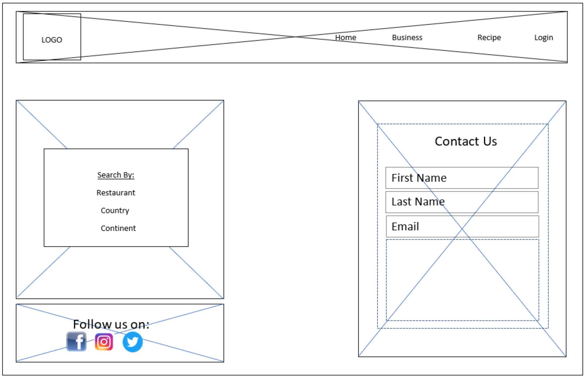

Overview
Purpose
The purpose of this site is to make the traditional taste of African food known to the entire universe. Since moving to the US, rexburg to be precise, one thing that I have miss the most is having to eat typical Nigeria dish and Africa dish in general. There are some day's I crave so much for it, but it's hard to source for the ingredient. so this site we be a platfrom whereby local cook can create a mobile restaurant. This simply means, if I make traditional africa food, I can register my brand on the site, and whoever is craving for a particular Africa dish, can easily login and make a search and order and it will be delivered.
Audience
1. My targetted audience will be everybody, but most especially Africans living in the diaspora.
Branding
Website Logo

Style Guide
Color Palette
Palette URL:
https://coolors.co/004b23-006400-007200-008000-38b000-70e000-9ef01a-ccff33| Primary | Secondary | Accent 1 | Accent 2 |
|---|---|---|---|
| #004b23 | #007200 | #9ef01a | #ccff33 |
Typography
Heading Font: Helvetica
Paragraph Font: Roboto
Normal paragraph example
The best platform to find Africa kitchen, have a taste of Africa food, and be connected to the mother land.
Colored paragraph example
Navigation
